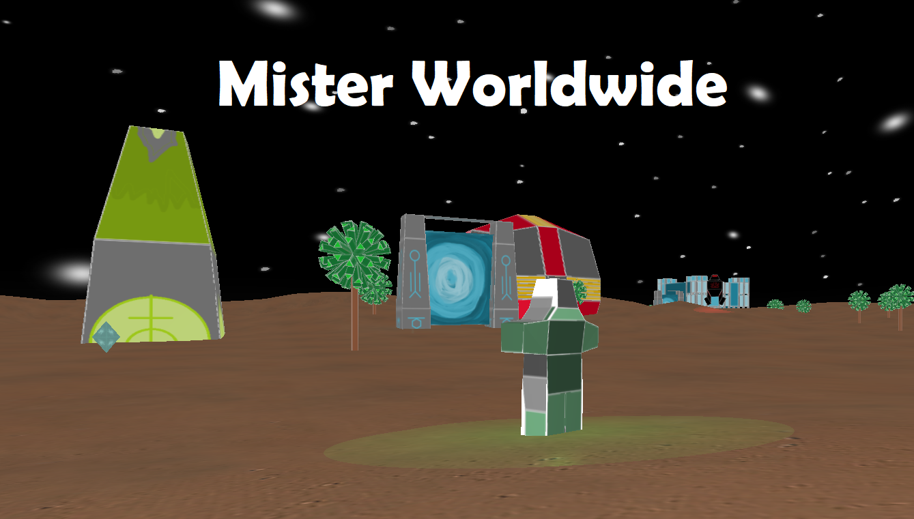

						<!--GAME PROJECT-->
						<div class="container-fluid tab-pane fade" id="misterworldWideProject"> <!--Pr2-->
                            <div class="container-fluid">
                                <div class="row-fluid"> <!--Row 1-->
                                    <div class="col-12"> <!--Presentation-->
                                        <div class="jumbotron">
                                                <h4>Mister Worldwide Game Engine Project</h4>
                                                <h5><font color="red">Work in progress</font></h5>
                                                <p>For our Computer Game Architecture class, I was part of a team that was tasked with building upon a game engine in <b>Java in OpenGl</b> and designing a game with it.
                                                    I participated the inclusion of <b>networked multiplayer</b>, design and animation of <b>external models</b> from scratch in <b>Blender</b>, and the <b>creation of tessilated terrain</b>, while taking full ownership 
                                                    of designing the world and the activities a player can do. Thematically, Mister Worldwide is a 3D space themed adventure game where you play as a sent robot by a human colony to explore a new alien world. 
                                                    There, the players collect the remains of the mysterious society to power an ancient space rocket. They must beware, however, that this ancient planet has ancient protector who does not take kindly to their artifacts being defiled.</p>
                                                <p>A custom <b>Java</b> Game Engine that utlizes the OpenGL render, which includes each of the following features. </p>
                                                <h5>General Layout:</h5>
                                                
                                                <p class="ex1"><b>External models.</b> The game must include at least two custom-made models designed by you,
                                                    Each person in the group must contribute at least one of those external models. Blender or
                                                    Maya are recommended. Note that RAGE supports only “OBJ”.
                                                    (related) – Each of these two models must utilize a skin (texture) of your own design using UVunwrapping, and the texture must be properly applied in your game.</p>
                                                <p class="ex1"><b>Networked Multi-player.</b> Your game must be able to be played by multiple players (at least
                                                    two) over a network. It is a requirement that players be able to see each other’s avatars in their
                                                    view. Note: it is also a requirement that your game function in single-player mode (see below).
                                                    (related) - Players must have a way of selecting their character avatar model at startup, and the
                                                    selection must be conveyed to other game clients so their ghosts use the proper models for
                                                    each player. This means if you use the simple game network protocol discussed in class, it must
                                                    be extended to pass a model name as part of the CREATE message sent to remote clients.</p>
                                                <p class="ex1"><b>Scripting.</b> The way in which you incorporate scripting is up to you; it could be used for
                                                    configuration/initialization, for dynamic world and/or algorithm modification, or something else.
                                                    JavaScript is the easiest since it is built in to Java, but you may use Python or Lua if you prefer.</p>
                                                <p class="ex1"><b>Skybox and Terrain.</b> Your game must include a skybox and terrain. You may use the RAGE
                                                    Skybox and Terrain classes, or you may develop your own. Note that it is not a requirement that
                                                    these components be integral to the gameplay. For example, if your game takes place mostly
                                                    “indoors” then you can meet this requirement by providing a way for a player to “go outside” and
                                                    move around on (and up and down on) the terrain, bounded by a skybox, which has no direct
                                                    effect on the game – but the program must at least demonstrate use of a skybox and a terrain.</p>
                                                <p class="ex1"><b>Lights.</b> You must utilize the RAGE lighting classes somewhere in your game. In particular, you
                                                    must make effective use of at least two lights (positional, spotlight, or directional) in addition to
                                                    the general ambient light. At least one must be possible for the player to turn on and off.</p>
                                                <p class="ex1"><b>3D Sound.</b> Your game must support several 3D action-specific game sounds as well as
                                                    background sound. It is recommended that you use RAGE’s audio package (which uses JOAL),
                                                    or you may use JOAL directly, or you may use another 3D sound package if you want.</p>
                                                <p class="ex1"><b>HUD.</b> Include a HUD component to let the player know what is happening in the game. If your
                                                    game is better without a HUD, you may include an input to enable/disable the HUD display.</p>
                                                <p class="ex1"><b>Hierarchical SceneGraph.</b> There must be some portion of your scenegraph that utilizes
                                                    hierarchical transforms. It could be a hierarchical object, or a hierarchical system of objects
                                                    (such as a planetary system). You should use RAGE’s scenegraph support for this.</p>
                                                <p class="ex1"><b>Animation.</b> Add skeletal animation using keyframes for at least one model in your game. It does
                                                    not have to be complex, but should look reasonably smooth. The animation must be created by
                                                    you, using Blender. You can then use RAGE’s Blender export tool and import it into your game.</p>
                                                <p class="ex1"><b>NPCs.</b> Your game must include one or more “Non-Player Characters” managed by at least a
                                                    rudimentary AI controller. This means the NPCs must do something under AI control, not just
                                                    stand around frozen, and not just move randomly. We will study various approaches in class.</p>
                                                <p class="ex1"><b>Physics.</b> Your game must include some use of a physics engine. You may use RAGE’s built-in
                                                    physics package (it uses JBullet), or you can use a physics package (such as JBullet) directly.
                                                    You can satisfy this requirement anywhere in your game, for any reasonable purpose.</p>
                                                <p class="ex3">Breakdown of general concepts after the picture</p>																			
                                        </div>
                                    </div>
                                </div>
                            </div>
        </div>